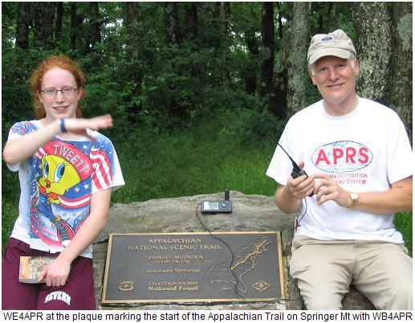
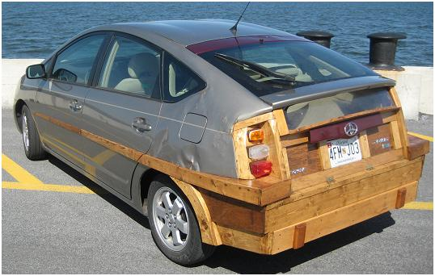
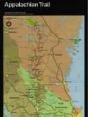
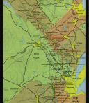
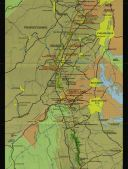
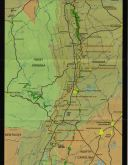
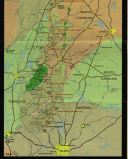
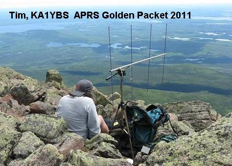
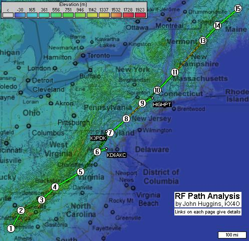
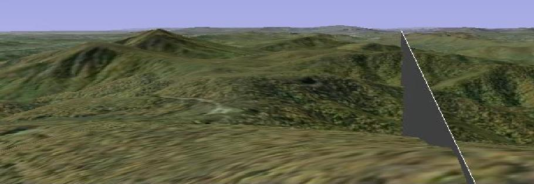

AT Ham Radio Group! Please join the Yahoo group. It is used for planning and real-time comms for Ham Radio activities on the AT.
 Appalachian Trail Ham Radio Survey: The goal of this survey is to determine ham radio coverage all along the Appalachian Trail and develop a list of all useable repeaters and the reliability of APRS communications. If you do a hike with your APRS HT, please capture the track history, since the dots will show the APRS coverage along that section of the trail. Send it to us here so others can see it. We have already completed a section of the trail during the annual Hike Across Maryland. This is mildly related to our Annual AT Golden Packet Event.
If interested, contact wb4apr at amsat dot org.
Sections so Far: The following sections have been hiked. Even if you have hiked it in the past, your track may still be on file. All you have to do is hike the trail with your APRS radio and tell us the DATES and TIMES and the CALLSIGN and we can add your section:
Hike Planning: All you have to do is take your radio and hike! Your coverage is automatically collected by APRS.FI. You are also encouraged to make notes on voice repeaters and Echolink/IRLP links too. The only AT repeater guide I can find is 15 years old (see guide). There is also an IRLP node Map by KD3SU See google map and an AT IRLP list.
THROUGH HIKERS: While you are hiking, you can also help out through hikers (if they are interested/willing) by entering their position as an object on APRS so that others can see some of these colorful people as they make progress along the trail. To meet the most through hikers, consider hiking North to South so that you are meeting them. You can figure out where they generally are because they start in Georgia in mid-march and end in Maine by September. These objects can be seen by friends and family on APRS.FI. You might want to prepare a small Ham Radio APRS handout to give to them when you ask for their trail name to let them know what we are doing. Please turn around and walk with them while chatting so as not to slow their progress. Use your HT to send a MESSAGE-OBJECT.
 Logistics Support: Through hikers love free handouts! Take along some candy bars and other snacks if you want to make friends in a hurry! The maps below can give you an initial idea of the trail in your area. Do not be confused by the 45 degree tilt of these maps from North. That makes the trail lay out pretty well on a map from top to bottom.





---[FULL SIZE]--- |
---[FULL SIZE]--- |
---[FULL SIZE]--- |
---[FULL SIZE]--- |
---[FULL SIZE]--- |
Annual Ham Radio Golden Packet Test: This Survey is not directly related to the annual Golden Packet Test but it shares a lot of the same people and interests. That test is a one day end-to-end communications test from some of the highest points along the trail as shown below. In contrast, this survey is more of the boots-on-the-ground test of individual coverage. On 24 July 2011, the golden packet test had people on all 15 mountain tops. This was the first year with someone on Katahdin, Tim, KA1YBS! (see photo below).
 . 
Is it LIVE or is it Google?: Google Earth is a fantastic tool for planning your hike. In many places you can zoom in and even see individual trees, rocks and logs! The next two images are the Google View and an actual photo provided by W4WWQ. The ray traced is towards Mt Rogers.


the ray shown is to Rogers Mountain
See another photo slightly more to The SW..
OTHER REFERENCES: The ideal reference for all things for AT hikers is found at whiteblaze.net. On that page, read through the excellent links on the left hand column.
Bob, WB4APR
See my older GENERAL page on APRS applications and Ideas on The AT
Return to The APRS HOMEPAGE or SiteMap.
![---[FULL SIZE]---](hamtrails/at1.jpg){kind=link}
![---[FULL SIZE]---](hamtrails/at2.jpg){kind=link}
![---[FULL SIZE]---](hamtrails/at3.jpg){kind=link}
![---[FULL SIZE]---](hamtrails/at4.jpg){kind=link}
![---[FULL SIZE]---](hamtrails/at5.jpg){kind=link}
{kind=link}